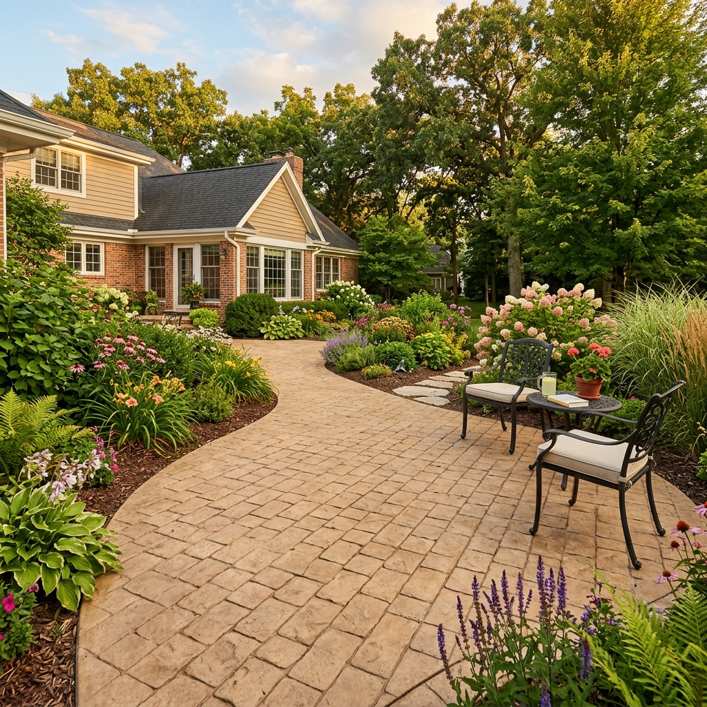

Concrete
Stamped Concrete Patios, Walkways & Surfaces
Decorative concrete surfaces with pattern, color, and texture for a more finished hardscape look.
Professional stamped concrete installation in Eastern Iowa
If you want the beauty of stone, brick, or slate without the cost and complexity of individual pavers, stamped concrete is the solution. We are a team of experienced stamped concrete contractors serving Eastern Iowa with decorative surfaces that look premium and hold up for decades.
Stamped concrete lets us press patterns and textures into freshly poured concrete before it sets — creating custom surfaces for patios, walkways, pool decks, driveways, and entries. Every project includes proper sub-grade preparation, reinforcement, and a quality sealer finish.
What is stamped concrete?
Stamped concrete is decorative concrete that has been textured and patterned using specialized stamps while the concrete is still workable. The process allows contractors to replicate the appearance of natural stone, brick, cobblestone, slate, wood planks, and many other materials — all within a single poured slab.
Unlike traditional gray concrete, stamped concrete incorporates integral color pigments and release agents that create realistic two-tone color variation. The result is a surface that looks like a premium natural material but benefits from the structural continuity of a solid concrete slab.

Popular patterns and design options
We offer a wide range of stamp patterns to match any architectural style or landscape aesthetic. For patios and pool decks, popular choices include ashlar slate, flagstone, herringbone brick, and wood plank textures. For driveways and entries, cobblestone and European fan patterns create an upscale, classic look.
Beyond the stamp pattern, color plays a major role in the final appearance. We use quality integral color pigments and surface-applied color hardeners to achieve everything from warm sandstone tones to deep charcoal and terra cotta — customized to complement your home's exterior.

Why choose stamped concrete over pavers?
Stamped concrete delivers the high-end look of natural stone or brick at a significantly lower cost than individual pavers or flagstone. Because the surface is a continuous slab rather than individual units, there are no joints for weeds to grow through, no settling of individual pieces, and no gaps for water to pool in.
Maintenance is also simpler — a fresh coat of sealer every few years keeps stamped concrete looking clean and protected. With pavers, you often need to periodically re-sand joints, reset settled stones, and deal with ongoing weed control. For many Iowa homeowners, stamped concrete offers the best balance of aesthetics, durability, and long-term value.

Our stamped concrete installation process
We begin every project with thorough site preparation — excavating to the proper depth, grading for drainage, and compacting the sub-base. We install rebar or fiber reinforcement within the pour to minimize cracking and add structural strength.
Once the concrete is poured and leveled, we apply color hardener to the surface, then press the selected stamp patterns into the concrete while it remains workable. After the concrete cures, we apply a high-quality sealer that brings out the color depth, protects against staining, and gives the surface its finished appearance.

Common stamped concrete problems — and how we fix them
-
1. Surface Cracking
Problem: Hairline or structural cracks can develop if the sub-base was not properly compacted, if the concrete mix had too much water, or if control joints were not placed correctly.
Solution: Fill hairline cracks with a color-matched concrete caulk and reseal the surface. Significant cracks require saw-cutting proper control joints or, in severe cases, partial removal and repour.
-
2. Fading Color
Problem: UV exposure and weathering gradually fade the surface color of stamped concrete, especially on south-facing surfaces that receive intense direct sunlight.
Solution: Apply a fresh coat of penetrating sealer or acrylic sealer to restore color vibrancy and protect the surface. Resealing every 2–3 years keeps stamped concrete looking its best.
-
3. Slippery Surface When Wet
Problem: A high-gloss acrylic sealer can become dangerously slippery when wet, particularly around pool decks, walkways, and steps.
Solution: Add an anti-slip additive (fine silica sand or polymer grit) to the sealer before application. We use anti-slip sealers on all surfaces where wet-foot traffic is expected.
-
4. Efflorescence (White Staining)
Problem: White mineral deposits can appear on the concrete surface when water moves through the slab and carries salts to the surface as it evaporates.
Solution: Clean the surface with a diluted acid wash, then reseal with a penetrating sealer that reduces water infiltration. Improve drainage around the slab to reduce moisture exposure.
-
5. Delamination of Color Layer
Problem: The surface color layer can flake or peel if the color hardener was applied incorrectly, if the sealer was applied too soon, or if the concrete was sealed over a damp surface.
Solution: Strip the existing sealer, assess the extent of delamination, and resurface with a concrete overlay if needed before reapplying color and sealer.